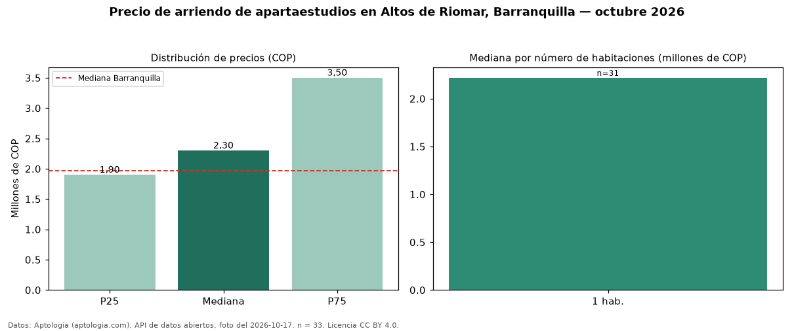

Precio de arriendo de apartaestudios en Altos de Riomar, Barranquilla — octubre 2026
Con 33 avisos vigentes, el canon mediano de apartaestudios en arriendo en Altos de Riomar, Barranquilla es COP 2.300.000 al mes. Frente al total de Barranquilla (COP 1.967.000), el barrio está 17 % por encima. El segmento con más oferta es el de 1 habitación (31 avisos, mediana COP 2.218.000). 100 % de los avisos incluye parqueadero. Por mediana, es el puesto 2 de 6 barrios de Barranquilla con al menos 30 avisos de apartaestudios en arriendo: en la franja media. La dispersión es moderada: el cuartil superior (COP 3.500.000) es 1,8 veces el inferior (COP 1.900.000). El aviso más barato pide COP 1.120.000 y el más caro COP 5.500.000. Datos: Aptología (aptologia.com), API de datos abiertos, licencia CC BY 4.0 — https://www.aptologia.com/apartaestudios/barranquilla/altos-de-riomar. Archivos: PDF de 2 páginas, CSV con las cifras y gráfica PNG.

| Avisos únicos | 33 |
|---|---|
| Percentil 25 | COP 1.900.000 |
| Mediana | COP 2.300.000 |
| Percentil 75 | COP 3.500.000 |
Fuente: avisos vigentes de portales inmobiliarios recopilados por Aptología, deduplicados (mínimo 30 avisos únicos por celda). Precios pedidos, no cerrados. Fecha: 2026-10-18.